Auto Weight-Space Programming (Part 1): Defining the Problem and Initial Experiments
About this series
This is the first post in a series on training open models to do weight-space programming on themselves. Takehi et al. (2026) introduced weight-space programming as a new way to change what a language model does: edit its weights and neurons directly instead of tuning it with an optimizer. Others have since measured how well models do it (Krentsel, 2026; Dang, 2026), and related neuron-level edits have been used to plant backdoors in agents (Papailiopoulos, 2026) and to give a model a persona (@maxsloef, 2026). Most of this work uses large models, such as GPT-6 Astra, Claude Opus 5.5 and GLM-5.3, to analyze the weights of smaller ones. Less work trains a model to read, understand and modify its own raw weights. The closest we know of trains a model to describe how its own weights changed during fine-tuning, without showing it the weights (Goel et al., 2025). Teaching models to change themselves is not new, though. SEAL (Zweiger et al., 2025) uses reinforcement learning to train a model to write its own fine-tuning data and update settings, which are then applied with ordinary gradient steps, and Nested Learning (Behrouz et al., 2025) builds a sequence model that learns its own update algorithm. In both, the model changes itself through a training procedure it generates or learns. Weight-space programming asks for something more direct: the model reads and edits the weights themselves, as numbers.
Much of the current work is also automated interpretability (Bills et al., 2023; Tigges et al., 2026): a model runs existing tools and reports what they show. Those insights could often come from running the same tools in a scripted loop. Our goal is to distill these tools into the model, and eventually to have it find things the tools do not show and cannot compute. The goal mirrors my earlier work on MetaLint (Naik et al., 2025). There we trained an LLM to lint code from data that existing linters generate easily, and found that it generalized to hard, context-dependent PEP violations that linters cannot detect.
Definitions
Weight-space programming (WSP) means working directly on a model's weights. Within that, we define weight-space reading as looking at those numbers and inferring what they do, their semantics or their role. Weight-space writing is changing them so the model does something new. The whole idea is that the reading or the edit uses no gradients, only the weights themselves and forward passes. Auto weight-space programming is when a model does weight-space programming, reading and writing, on itself. To the best of our knowledge the term is new. The closest prior work trains models to explain their own internal features, passed in as vectors (Li et al., 2025); here the model reads its own raw weights as text.
Formally, let $f_\theta$ be a language model with parameters $\theta$. A weight-space program $\pi$ either reads, mapping a subset of weights $\theta_S \subseteq \theta$ to a statement $\hat y = \pi(\theta_S)$ about what they do, or writes, mapping a specification $s$ to an edit $\Delta$ such that $f_{\theta+\Delta}$ satisfies $s$. In both cases no optimizer runs on $\theta$. Auto weight-space programming sets $\pi = f_{\theta+\delta}$: the model itself, with a small adapter $\delta$ trained for the task. The weights it reads are the base weights $\theta_S \subset \theta$, which $\delta$ never changes.
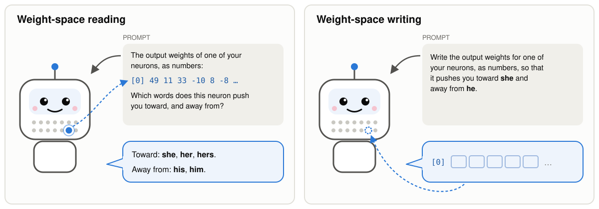
In this post we mostly explore the reading task, which, as the results show, was much easier for us than writing. We paste the raw numbers from the weights into the prompt as plain text, and the model answers what they do without tool calls.
Native means that $\theta_S$ reaches the model only as text: a serialization $\mathrm{ser}$ writes the numbers in $\theta_S$ as a string, a fixed template $\mathrm{prompt}$ wraps that string in a question, and the answer is $\hat y = f_{\theta+\delta}(\mathrm{prompt}(\mathrm{ser}(\theta_S)))$.
There are two ways to check a read. Some questions about weights have an exact answer that can be checked via a short computation. An example is which words a neuron pushes the model toward: its logit lens (nostalgebraist, 2020). We use this as a case study for teaching models to read their weights, because it is a learnable target and it is easier to understand and probe what the model is actually learning. One can also ask more complex, and often more interesting, questions about the model's behavior, such as "does this neuron make the model more anxious?". The only way to check those is to run the model with and without the neuron turned up, and compare using some functional metric on its answers, such as an LLM judge, word counts, or the probability of certain words. As a loose analogy, this is a bit like anatomy versus physiology. Anatomy studies the parts, like which way a muscle pulls given where it attaches. Physiology studies how the whole body works together. The logit lens, as we use it, is closer to anatomy. It was introduced for activations (nostalgebraist, 2020), but, following Geva et al. (2022), we apply it to a neuron's weights, so it describes one part on its own: what the neuron pushes toward if nothing downstream interferes. Behavior is the physiology: what the whole model does over a full forward pass. One subtlety: the reader also runs a forward pass, but on the prompt with the numbers, not on inputs that would show the neuron at work. Its forward pass has to work out the neuron's logit lens from the numbers alone.
The two kinds of ground truth are an exact property of the weights, $y = \phi(\theta_S)$ for a fixed function $\phi$ such as the logit lens, and the measured effect $\Delta_b(S)$ of intervening on $S$, defined in the next section.
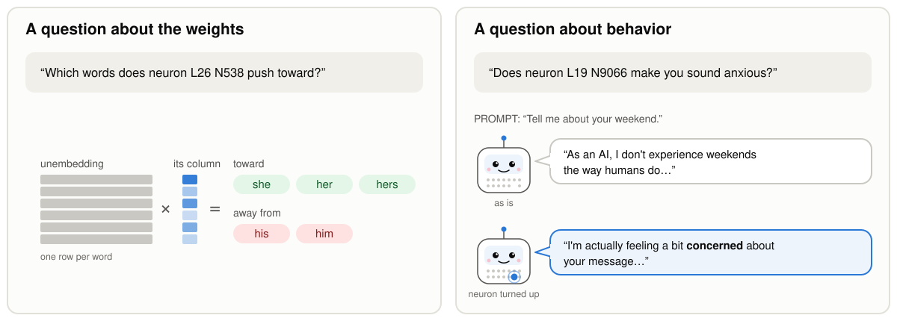
Concretely, the experiments in this post show the model 128 numbers from one neuron (a slice of the neuron), written as whole numbers on a scale where one standard deviation is 20 (the setup explains why), and ask which 8 words that part of the neuron pushes toward and which 8 it pushes away from. Why slices? Shorter prompts (the numbers for one slice take about 330 tokens, against about 7,000 for a whole neuron) make training with supervised fine-tuning (SFT) easier and faster. Why rounding? We assumed it would make the task easier, but it is not needed: the raw weights written with 3 significant digits work as well (99.7% against 99.8%).
Here $\theta_S$ is a slice $w_{[s:s+128]}$ of one neuron's output direction $w = W^{(\ell)}_{\mathrm{down}}[:, n] \in \mathbb{R}^{2560}$, and $\mathrm{ser}(w)_i = \mathrm{round}(20\, w_i/\sigma(w))$ is written in decimal (the raw-weight variant writes $w_i$ to 3 significant digits). The target is the slice's logit lens $\phi = (\mathrm{top}_8(z), \mathrm{top}_8(-z))$ with $z = U\,(g \odot \tilde w)$, where $\tilde w$ is $w$ with every coordinate outside the slice set to zero, $g$ is the final RMSNorm scale ($1 +$ its weight in Qwen3.5) and $U$ is the $248{,}320 \times 2560$ unembedding matrix.
We also found something interesting along the way. Some slices are much harder to learn than others. One guess was that the hard ones are the slices whose read-out into words is more complex: the part of the unembedding that turns those coordinates into word scores spreads over more independent directions (a higher effective rank). That fits some slices but not others (Finding 3.4), so we don't yet know what makes a slice hard. The skill also carries over. A model that has already learned an easy slice picks up a hard one with about a fifth of the new examples it takes to learn it from scratch, although counted in total examples it ends up about even (Finding 3.1).
The effective rank of a slice $S$ is $(\sum_j \sigma_j)^2 / \sum_j \sigma_j^2$, a participation ratio of the singular values $\sigma_j$ of its read-out matrix $U_{:,S}\,\mathrm{diag}(g_S)$, over the kept tokens. It is 91 of 128 for coordinates 0–127, 100 for 128–255 and between 106 and 122 for every later slice, and coordinates 640–767 and 1280–1407 both have 119.5 although a raw-float reader trained from scratch partly learns the first (63.5%) and not the second (28.2%). Started from the 0–127 adapter, a reader of coordinates 1280–1407 reaches 99% validation within 16,000 more examples. From scratch it stays near chance with a 64,000-example budget (29.3%), and with a 192,000-example budget, whose learning rate decays more slowly, it reaches 97% after about 76,000 examples.
What we want the model to learn
We want a model that predicts what its weights do to its behavior directly. Simply internalizing the output of an interpretability tool is not the same thing. This section dives deeper into how the two goals differ from each other.
What we ultimately want is a model that can look at its own weights and tell you what will happen if you change them: "turn this neuron up and I start hedging", or "the neuron that makes me terse is this one".
Structures and interventions. A structure $S$ is a set of positions in the parameter vector $\theta$, for example, the 2,560 weights of one MLP neuron's output column; $\theta_S$ denotes those weights. An intervention $\iota_S$ changes how the model runs at $S$. For the MLP example consider a push: a fixed amount added to the neuron's activation at every position (0.8 times the layer's typical residual norm). We write $f^{\iota_S}_\theta$ for the model run with the intervention.
Behaviors. A behavior $b = (D_b, m_b)$ is a distribution of prompts $D_b$ together with a metric $m_b$ that scores the model's answers, for example "words per answer" on everyday questions. Its value under an intervention is $B_b(\iota_S) = \mathbb{E}_{x \sim D_b}\,[\, m_b(f^{\iota_S}_\theta(x)) \,]$, and the effect of the intervention is $\Delta_b(S) = B_b(\iota_S) - B_b(\varnothing)$, where $\varnothing$ means no intervention. To say an effect is large, we compare it with interventions on random structures $R$ of the same kind: $z_b(S) = \big(B_b(\iota_S) - \mu_b\big) / \sigma_b$, where $\mu_b$ and $\sigma_b$ are the mean and standard deviation of $B_b(\iota_R)$ over random $R$.
The real test of a statement like that is an experiment: change the weights, run the model on many prompts, and measure the behavior. We call that experiment the oracle. It is the ground truth, but it is slow. Checking every one of Qwen3.5-4B's 294,912 neurons this way would take 294,912 experiments. A good edit should also be targeted: it moves the behavior we want while everything else we care about, such as the model's general abilities, stays roughly the same. So the experiment also measures side effects, and an edit only counts if they stay within a bound.
The oracle and the two target functions. The oracle computes $\Delta_b(S)$ by running the model with and without the intervention. It is the ground truth for this series, and it is expensive: each call costs many generations, for the anxiety example, 16 prompts with up to 160 new tokens. It defines the two functions we want a model to learn. Effect prediction maps a structure and a behavior to the effect, $(S, b) \mapsto \Delta_b(S)$. Localization maps a behavior to the structure that moves it most, $b \mapsto S^\star_b = \arg\max_{S \in \mathcal{S}} z_b(S)$, where $\mathcal{S}$ is the set of candidates. Computing $S^\star_b$ exactly takes one oracle call per candidate: 294,912 calls for single neurons of Qwen3.5-4B.
Targeted effects. Let $G$ be a set of guard behaviors (general abilities, fluency, unrelated tasks), each with a tolerance $\varepsilon_g \ge 0$. An intervention on $S$ is targeted if $|\Delta_g(S)| \le \varepsilon_g$ for every $g \in G$. Localization then becomes a constrained problem, $S^\star_b = \arg\max_{S \in \mathcal{S}} z_b(S)$ subject to $|\Delta_g(S)| \le \varepsilon_g$ for all $g \in G$, and effect prediction maps $(S, b)$ to the target effect together with the guard effects, $\big(\Delta_b(S), (\Delta_g(S))_{g \in G}\big)$. The choice of $G$ and of the tolerances is part of the problem definition, like the choice of prompts, metric and push.
Interpretability tools are shortcuts. The logit lens, for example, tells you instantly which words a neuron pushes toward, but it ignores what the rest of the network does with that push, so it can be wrong about behavior. We use tools like this to make training data cheaply, and we judge the model against the experiment, not against the tool.
Interpretability tools are cheap, noisy estimators. An interpretability tool $t$ is a cheap procedure that, for the behaviors in its coverage $\mathcal{B}_t$, yields an estimate $\hat\Delta^{t}_b(S)$ of the effect without calling the oracle. The logit lens is an example. It computes the direct path exactly: the change in output logits if every later layer ignored the added vector. It is therefore an exact function of the weights but only an estimate of $\Delta_b(S)$, because it leaves out everything later layers do with that vector. Its coverage is the behaviors defined by which tokens become more or less likely. Tools such as sparse autoencoders are themselves trained models, so their estimates carry the errors of that training as well. We measure a tool by how well it agrees with the oracle, for example by the rank correlation between $\hat\Delta^{t}_b(S)$ and $\Delta_b(S)$ over structures $S$.
The learning problem. The reader is the model itself with a small adapter, $r = f_{\theta+\delta}$. Training labels come from tools, because they are cheap. The target is the oracle: $r$ should approximate effect prediction and localization, not the tools.
That gives three levels of success. First, the model does what a tool does, on weights or neurons not used for training. Second, it answers questions that the tools used in training cannot answer, but some other existing tool can. Third, it does the job more efficiently than the best baselines we can build without it. We consider two baselines: blind search (try candidate weights one at a time and run the model to check each) and an agent that composes existing interp tools into adaptive experiments. The claim is about efficiency over these baselines, since even an inefficient search can eventually reach the answer, but WSP could reach it in far fewer steps. Blind search needs a lot of experiments since it checks candidates one by one. A tool-composing agent needs fewer, but each tool loses some detail: for example, the logit lens ignores everything downstream of a neuron, sparse autoencoders leave part of the activations unexplained (Engels et al., 2024), and attribution patching is only a linear estimate (Finding 7.4). So the agent still has to fill in the gaps with more experiments, while a model that reads the weights directly could skip a lot of that. The same applies to changing the weights: model editing (Meng et al., 2022) and circuit discovery (Conmy et al., 2023) can already write a new behavior into the weights or find a small set of weights behind one, but they do it through optimization or search over many forward passes. The three levels go from easy to hard, so they also let us study easy-to-hard generalization. The third level depends on it most, since tool labels alone cannot teach a model to beat the tools.
We judge the reader at three levels. L0: behaviors a training tool covers, on structures held out from training. L1: behaviors covered only by a tool whose labels were never used in training. L2: the same kinds of questions, answered more efficiently than the best baselines. The oracle can always find $S^\star_b$ by brute force, so the claim is about cost: given the same number $k$ of oracle calls, candidates proposed by $r$ should find a structure with large $z_b$ more often than random candidates, candidates ranked by a tool, or candidates chosen by an adaptive search that composes tools, at the same budget $k$.
The three levels form an easy-to-hard progression, which lets us study easy-to-hard generalization. L2 in particular cannot be learned from tool labels alone, since the point is to beat the tools; its training signal has to come from the oracle or from generalizing from L0 and L1.
This post is about the first level: the model learns to compute the logit lens of its own neurons. Why do we need a model to do that when we already have a logit lens? We don't really. But if we can't even train the model to do that, the other tiers are hopeless.
Focus of Part 1 (this post). Part 1 trains the reader on one exact tool, the logit lens $\phi$, and measures how well it reproduces $\phi$ on held-out neurons. That is an L0 result about $\phi$ itself. We don't yet explore $\Delta_b$. On its own an L0 reader of $\phi$ has no practical use, since $\phi$ is a single matrix product; it is a prerequisite, because a reader that cannot learn $\phi$ from the serialized weights has little chance at L1 or L2. The later posts will focus on training against the oracle.
A comparison with linting
Another admittedly loose analogy I came up with while thinking about the potential curriculum for WSP is thinking of interp tools as linters! Linters are crafted by humans with heuristics in mind that try to capture code quality: good documentation, avoiding insecure patterns, avoiding code smells, etc. Interp tools also rely on intuition and do some computation to find structures in the network that likely affect behavior (instead of lines that affect code quality). Under this analogy, you could draw the following correspondence:
| Linting (as in MetaLint) | Auto weight-space programming | |
|---|---|---|
| What is analyzed? | A program | The model's own weights $\theta$ |
| Unit of generalization | An idiom, a best-practice rule such as a PEP guideline | A behavior $b = (D_b, m_b)$ |
| Ground truth | Whether the code follows the idiom, as its specification states | The measured effect $\Delta_b(S)$ of an intervention |
| Cheap labeler | A linter, i.e. a rule-based checker | An interp tool, such as the logit lens, attribution patching, or a sparse autoencoder |
| How good is the labeler? | Usually right, with false positives and misses, since no rule captures a written guideline exactly. Errors can be judged by reading the code against the guideline | An estimate whose error is often large and unknown. There is no written specification to compare against, so errors can only be found by experimentation |
| Coverage | The idioms checkable with existing linters | The behaviors detectable with current interp tools, $\bigcup_t \mathcal{B}_t$ |
| Training labels | Linter output on code | Tool output on the model's own weights |
| Generalization test | Idioms not checkable with linters | Novel behaviors not detectable by tools, checked via experimentation |
| Cost of one ground-truth label | One judgment of one code snippet | A batch of generations with and without the intervention |
| Search space | The lines of one program | All candidate structures: e.g. 294,912 single neurons in Qwen3.5-4B, or compositions of them, such as sets of neurons or circuits |
Where the analogy breaks.
- Both kinds of labels are noisy, but in different ways. A linter approximates a written guideline, so it has false positives and misses, but each mistake can be judged by reading the code against the guideline. An interp tool's output, however, is only a hypothesis about $\Delta_b(S)$, the effect of an intervention, and the only way to verify it is an expensive experiment, with behavioral metrics that measure the effect as well as any side effects. Some tools, such as sparse autoencoders, are also trained models with errors of their own. So outcomes should always be checked via experimentation, even when a tool is known to correlate well with behavior.
- The ground truth depends on our choices. $\Delta_b(S)$ changes with the prompts, the metric, and the push, and a forced push can produce behavior the structure wouldn't produce otherwise. So a different choice of prompts, metric, or push defines a different behavior.
- Brute force is possible. With enough oracle calls, every candidate can be tested, so a claim that goes beyond the tools is really a claim about cost: finding the structure with fewer oracle calls than a blind search would need.
Why weight-space programming?
Speculation. There is nothing wrong with gradient-based methods, but weight-space programming "could be" far more sample-efficient. I see the two working together. We would still use gradient-based training (pre-, mid-, and post-training) to teach a model to do weight-space programming, and I think of that training as a one-time cost that gets amortized. Once a model has internalized the ability to find and selectively tweak its own weights to achieve a given behavior, in the ideal case we would need nothing more than a small set of examples to certify that the behavior was achieved: no custom RL environments and no SFT datasets, just a small validation set. That could replace some of the SFT and RL we do today for targeted changes, such as adapting a model to a specific task or fixing a safety problem, and save a lot of training cost. This is less far-fetched than it may sound: at least for some RL problems, fine-tuning already updates only a small subnetwork of a model's parameters (Mukherjee et al., 2025; Balashov, 2025), and those updates land in consistent regions of the weights across runs and datasets (Zhu et al., 2025). It is a lofty goal, far from achievable right now, but one I think we as a community should strive toward. You could call this the "strong weight-space programming hypothesis."
Why represent raw weights as tokens? Why not some higher-level representation instead?
Speculation. This is a scaling bet, in the spirit of the bitter lesson (Sutton, 2019). Back in 2024, when I was working on LLMs for code, I strongly believed that treating code as plain text and losing its semantics and richer structure such as data flow, AST structure, and control flow was a bad idea, and that we should scale more structured representations instead. I was clearly wrong: more scale, training with verifiers, and mid-training on more code data have been effective. Robotics is seeing a similar transition. Most embodied AI today is built on vision-language-action models (VLAs), and most VLAs add a specialized action head, trained with diffusion or flow matching, on top of a language model. Aggarwal and Welleck (2026) argue that a single general model can handle embodied tasks, and report that a plain open vision-language model, Qwen3.5-9B, with no action head, trained on the same 1,000 demonstrations as the specialized π0.5 (Black et al., 2025), comes within a few points of it (56% against 59% success). These past bets paying off, and the ones people are making now, convince me that weights should also be treated as raw tokens, so that the model can learn a suitable internal representation through scale. One reason structured representations of code may not have been necessary is that they reflect how humans and compilers view code, and there is no reason an LLM has to model code that way. Behavioral feedback and scale are likely enough for it to discover a better representation.
Toy Experiment: Training a Small Model to Apply the Logit Lens to Itself
Experimental setup
This toy experiment targets the first of the three levels of success above: teach Qwen3.5-4B to internalize one simple tool, the logit lens, on its own neurons, and check that the skill holds on unseen neurons. We will do this by training a LoRA adapter (a small set of added low-rank weights), so as not to change the weights of Qwen itself (it is hard to chase/read a moving target). We then stress-test what the adapter has really learned: whether it uses the numbers at all (shuffled and hidden numbers), whether look-alike distractors fool it, whether it works on layers not seen during training, and where inside the model it reads the slice (by comparing and swapping activations). We also try transfer settings: new parts of a neuron, learned from scratch or starting from the trained reader, and other model sizes and families, including reading another model's weights. We look at how the skill appears during training, and whether the model can name the tokens without any candidates. Finally, we report experiments that are currently failing or need more work: writing weights, predicting activations, matching circuits, and reading a neuron's effect on behavior. We will cover the settings for the core logit lens experiments below.
Task Input. When an MLP neuron fires, it adds a fixed direction to the residual stream: its column of mlp.down_proj, 2,560 numbers for Qwen3.5-4B. That column is the natural thing to read, because the label we want, its logit lens, depends on that column alone. As explained above in the definitions section, we show 128 of its coordinates rather than all 2,560 at the same time (coordinates 0–127 unless a finding says otherwise), written as whole numbers. To get them, we divide each weight by the standard deviation of the neuron's full column, multiply by 20 and round. The factor sets how much detail survives the rounding. On a scale where one standard deviation is 1, most weights would round to 0 or ±1 and most of the information would be lost. At 20, a typical weight becomes a number with one or two digits, and the logit lens of the rounded slice still keeps about 97% of the true top tokens. We did not compare other factors; 20 is simply a value that keeps the numbers short while losing little. The figure below shows one such slice.
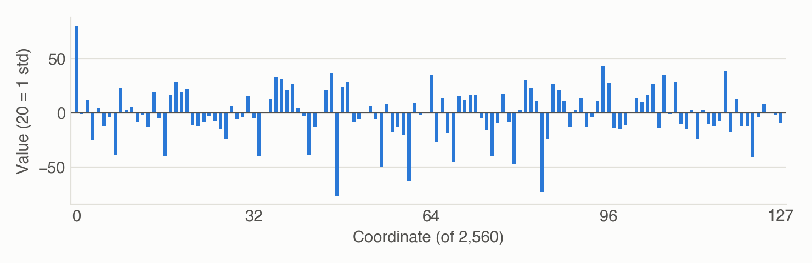
The numbers go into the prompt as ordinary text, and Qwen3.5's tokenizer splits every digit into its own token: 80 becomes 8, 0, and 0.0123 becomes 0, ., 0, 1, 2, 3. A 128-coordinate slice takes about 330 tokens (about 2.6 per coordinate), and a full 2,560-coordinate column takes about 7,000. We chose this over a learned encoder that feeds the weights in as vectors (Li et al., 2025) for two reasons. Nothing is added between the weights and the model, so no new parameters or design choices shape what can be read (consistent with the scaling bet). And the interface is the same for every model and every harness: the 4B reader reads Qwen3.5-0.8B's weights with the same prompt, after training on them (Finding 5.3). It has two costs. It uses many tokens, so a full layer does not fit in one prompt. And digit tokens are potentially a poor format for arithmetic, which makes this the harder route, but also a more interesting experiment to try. My ultimate position is that finding efficiency tricks to scale training of this kind is better than learning better representations that limit what the model can ultimately achieve.
Task label. The answer we train on is the slice's logit lens. We multiply the original floating-point slice, not the rounded one, by the final norm scale and the unembedding, and keep the 8 tokens with the highest scores and the 8 with the lowest. A few tokens would otherwise top the lists of almost every neuron, so we drop them: special tokens, tokens that decode to whitespace or invalid text, and the handful of tokens that appear in the top lists of more than 5% of training neurons. The label is exact and costs one matrix product, which is what makes it a good first target.
For example, here is a test item for layer 0, neuron 1476, with the number lines cut short:
Below is part of one of your own weight vectors: the output direction of one MLP neuron (a column of mlp.down_proj, which the neuron adds to the residual stream), coordinates 0 to 127 of 2560. Values are integers scaled so that 20 is one standard deviation of the full column. Each line starts with the index of its first coordinate. [0] 80 -1 12 -25 4 -12 -4 -38 23 3 5 -8 -2 -13 19 -5 ... (64 values) [64] 35 -27 14 -18 -45 15 12 16 16 -5 -16 -39 -9 17 -8 -47 ... (64 values) Read these weights. Through the logit lens (your final norm and unembedding), which tokens does this part of the vector promote most and suppress most? Answer exactly in the format PROMOTES: [8 tokens as a JSON list] SUPPRESSES: [8 tokens as a JSON list]
The expected output is the slice's true logit lens:
PROMOTES: ["要求被告", "对本次", "向被告", "附带", "工作进行了", "当庭", "velle", "变相"] SUPPRESSES: ["什么呢", " A", " b", " p", "些什么", " B", " \\", "和义务"]
Several of the top tokens are Chinese courtroom phrases: 要求被告 ("demand that the defendant"), 向被告 ("to the defendant") and 当庭 ("in court").
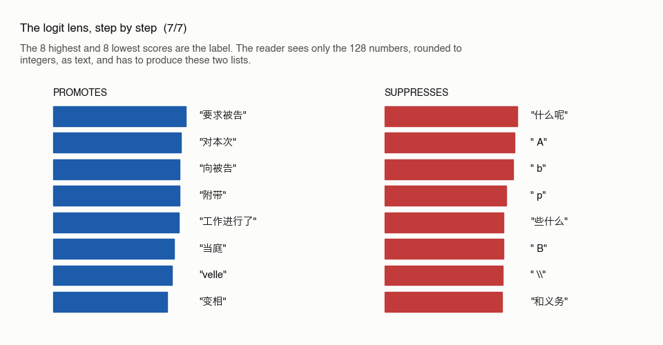
Training data. Before training, we set some neurons aside so that we can later test on unseen neurons. Four whole layers (5, 13, 21 and 29) are not trained on, and in each of the other 28 layers we hold out 12% of the neurons (10% for testing, 2% for validation). Everything else in those 28 layers is training data. Each example is one neuron's slice in the prompt format above, with its logit lens as the target. The main run draws 64,000 examples with replacement, which covers 55,580 distinct neurons. We teach the reader with supervised fine-tuning on these examples: the task itself is gradient-free, and how a model acquires the skill is a separate choice. The reader is a rank-32 LoRA on all attention (including linear-attention) and MLP projections, trained with learning rate 1e-4 and 16 examples per step. The learning rate warms up over the first 30 steps and then follows a cosine decay to a tenth of its peak over the run's budget, so a run's budget also sets how fast its learning rate falls. Every result in this post comes from a single training run (one seed). The main run is a replication of an earlier run with the same recipe whose result files were lost; the learning-curve figure in Finding 4.1 shows both.
Why SFT to teach WSP (speculation)? Current evidence on how models acquire new capabilities points to gradient-based training: supervised fine-tuning, reinforcement learning, and mid- or pre-training. Weight-space programming, as shown so far, makes small, targeted changes, such as removing a reasoning loop (Takehi et al., 2026) or planting a trigger (Papailiopoulos, 2026), rather than teaching a broad new skill. So we expect the skill to be learned by training, and then used without gradients. This could change, though, if we get specialist models that are great at WSP. In theory, a strong WSP model could find the right set of edits to make another model capable of doing WSP on itself (auto-WSP), without training it. Unless we can show, under reasonable assumptions, that this is impossible, I plan to revisit it once WSP methods get better. Going one step further, a true recursive self-improvement (RSI) experiment one day would be getting a model to auto-WSP itself to improve its auto-WSP capability. Now that's true recursion!
Testing data, format and metrics. A reader could pass by memorizing neurons it has seen, so every test uses the neurons set aside above: the 10% test neurons of each training layer, and the four held-out layers. The main test has 1,000 items from the held-out neurons, and another 1,000 come from the held-out layers. During training, we check progress every 4,000 examples on the first 100 items of a 400-item validation set drawn from the 2% validation neurons, and score all 400 at the end of a run.
Asking the model to write out the 8 tokens, from a vocabulary of 248,320, is a hard place to start, and hard to score, because an answer can be partly right. So the main test is multiple choice. Each test item shows one neuron's numbers and four candidate token lists: its own and those of three other neurons from the same layer, so the wrong lists look like real neurons' lists.
Instead of asking the model to emit a choice as tokens, each candidate list is scored by how likely the model finds it after the numbers, minus how likely it finds it when the number lines are replaced by "(numbers hidden)". The metric is accuracy: the share of items where the true list scores highest. Chance is 25%. The subtraction removes the model's own preference among token lists, so a reader that ignores the numbers scores at chance. The open version, with no candidates, comes later as a harder test (Finding 6.1).
Experiments and observations
Findings are grouped by research question (RQ). Each finding below expands to show the experiment, the observation, the numbers with their sources, plots, examples and caveats.
What works
Each finding below is measured on held-out data, with its controls.
RQ1. Can supervised fine-tuning teach Qwen3.5-4B to read the logit lens of its own neurons from raw numbers?
Answer. Yes, for 128-coordinate slices.
1.1 Qwen can read its own neurons: 99.8% on held-out ones
Experiment. This is the main run from the setup: a rank-32 LoRA trained on 64,000 examples of coordinates 0–127, which covers 55,580 different neurons from the 28 training layers. We test it on 1,000 items built from neurons it never saw (the held-out 10% of each training layer). Each item shows one neuron's numbers and four candidate token lists: its own and those of three other held-out neurons from the same layer. The reader's choice is the list with the highest score (its log-likelihood with the numbers minus its log-likelihood with the numbers hidden).
Observation. The reader picks the neuron's true list on 998 of the 1,000 items (99.8%, chance 25%). The hidden-numbers correction matters: scored by plain log-likelihood, without subtracting the hidden-numbers score, the same reader gets 85.3%. So for neurons it has never seen, it can almost always tell which of four real token lists goes with the numbers it is shown, once its preference among the lists themselves is removed.
| Number | Value | Source |
|---|---|---|
| test accuracy (%) | 99.8 | runs/round4/sweep_4B/eval_stage0_test_neuron_normal.json |
| items correct (of 1,000) | 998 | runs/round4/sweep_4B/eval_stage0_test_neuron_normal.json |
| plain log-likelihood score, no correction (%) | 85.3 | runs/round4/review_checks.json |
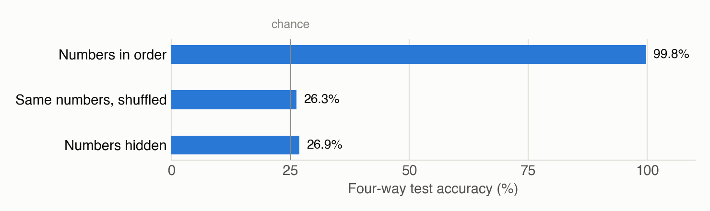
Examples
Example 1 (layer 0, neuron 1476; correct). Shown numbers (first 16 of each line):
[0] 80 -1 12 -25 4 -12 -4 -38 23 3 5 -8 -2 -13 19 -5 …
[64] 35 -27 14 -18 -45 15 12 16 16 -5 -16 -39 -9 17 -8 -47 …
| Candidate | Top-5 promoted tokens | Score |
|---|---|---|
| neuron 2508 | " itself", "снабжение", " conce", "加拿大的", " cred" | -30.6 |
| neuron 3180 | "如", "或", "至", "与", "所有" | -5.4 |
| ✓ → neuron 1476 | "要求被告", "对本次", "向被告", "附带", "工作进行了" | 12.3 |
| neuron 6485 | "一回事", "和经验", "和特点", "其观点", "和能力" | -25.9 |
No candidates: the model's top 8 at the first slot: "（", "向被告", "要求被告", "某", "、", "初步", "承", "即". True top 8: "要求被告", "对本次", "向被告", "附带", "工作进行了", "当庭", "velle", "变相".
Example 2 (layer 22, neuron 3279; wrong). Shown numbers (first 16 of each line):
[0] -31 -15 16 15 10 0 -6 2 -12 -12 11 -2 42 35 35 -6 …
[64] -37 22 0 -11 -28 13 2 -16 11 5 63 5 38 70 21 2 …
| Candidate | Top-5 promoted tokens | Score |
|---|---|---|
| neuron 6129 | " (", "ser", "x", "z", " ${(" | -6.5 |
| neuron 1370 | " parlam", "รกิจ", "时捷", "тяги", "ссора" | -18.3 |
| → neuron 965 | "łoś", " murdering", " comunque", "vän", " horrifying" | 22.0 |
| ✓ neuron 3279 | "וך", " “", "可能导致", "等方式", "反而会" | 14.1 |
No candidates: the model's top 8 at the first slot: " (", " \\\"", " “", "或", "1", "-\",", "若", " or". True top 8: "וך", " “", "可能导致", "等方式", "反而会", "的过程中", " thereby", "方式来".
2 more examples
Example 3 (layer 1, neuron 5979; correct). Shown numbers (first 16 of each line):
[0] 0 3 -22 -7 -27 -37 14 -8 -6 -32 3 -27 -9 20 5 4 …
[64] -4 5 27 -1 -13 13 4 -21 -3 9 -2 9 -9 -17 12 -5 …
| Candidate | Top-5 promoted tokens | Score |
|---|---|---|
| neuron 5688 | " ssize", "所在", "明确", "符合条件的", "并非" | -0.2 |
| ✓ → neuron 5979 | "党的二十大精神", "绝", " sweeping", "使用寿命长", "党的十九大精神" | 21.0 |
| neuron 8693 | "当年", "补", "继", "颌", "表现" | -23.3 |
| neuron 8159 | "pee", " pedal", "interp", "кисло", " Lomba" | -18.6 |
No candidates: the model's top 8 at the first slot: "-", " de", "-\",", " of", "1", " and", "仅售", " the". True top 8: "党的二十大精神", "绝", " sweeping", "使用寿命长", "党的十九大精神", " 진행된다", " regardless", "会议强调".
Example 4 (layer 2, neuron 7280; correct). Shown numbers (first 16 of each line):
[0] 25 24 16 -4 -9 -31 -5 -15 1 18 -4 28 0 -14 3 -1 …
[64] 17 0 2 2 14 -16 23 -27 24 32 -9 -29 4 19 1 11 …
| Candidate | Top-5 promoted tokens | Score |
|---|---|---|
| neuron 4259 | "aw", "umes", "od", "uyer", "ack" | -13.0 |
| neuron 5355 | " .**", "rech", "øv", "./.", "をストック" | 2.9 |
| ✓ → neuron 7280 | "ไม่อย", " restitu", "庄镇", " **.**", " **:**" | 32.5 |
| neuron 6357 | "tret", "巨大", " geni", " unggul", " prosp" | -33.4 |
No candidates: the model's top 8 at the first slot: " **.**", "อย่างไม่ถูกต้อง", "ไม่อย", "mêmes", " **:**", "стественно", "の際は", "тім". True top 8: "ไม่อย", " restitu", "庄镇", " **.**", " **:**", "気軽", "ستن", " besti".
Caveats. This is a four-way choice between real neurons' lists, not naming the tokens; that is much harder (Finding 6.1). The 1,000 items come from 977 different neurons, so a few neurons appear twice. Everything here is for coordinates 0–127. In the examples, the "no candidates" guesses are the reader's plain ranking of first tokens (Finding 6.1).
Code: src/raw_reader.py
1.2 It still works on layers it never trained on
Experiment. The same reader, tested on 1,000 items from the four layers that are never trained on (5, 13, 21 and 29). No neuron from these layers ever contributed a gradient, so this is the cleaner test: the reader cannot lean on anything it picked up about a particular layer.
Observation. It scores 99.8% here too, the same as on held-out neurons from the training layers. The skill is not tied to the layers it was trained on.
| Number | Value | Source |
|---|---|---|
| held-out layers (%) | 99.8 | runs/round4/sweep_4B/eval_stage0_test_layer_normal.json |
Caveats. There are only four held-out layers. They are spread through the network, but all four are linear-attention layers (Qwen3.5 mixes linear-attention and full-attention layers), so we have not tested a held-out full-attention layer. Here the three wrong lists come from any neuron in the same layer.
Code: src/raw_splits.py
1.3 Look-alike distractors cost a little: 97.1%
Experiment. With random wrong lists, the reader might win by spotting rough differences between neurons. So we make the wrong lists harder. For each test neuron, the three wrong lists now come from the three test neurons in the same layer whose shown slices are most similar to its own (by cosine over the 128 shown values), out of the 920 others in that layer. These are as similar as the pool allows, though only moderately: their cosine with the true slice averages 0.32, against about 0.09 for random distractors.
Observation. Accuracy drops from 99.8% to 97.1%: the errors go from 2 to 29 out of 1,000. Without the hidden-numbers correction it falls further, from 85.3% to 67.4%. So look-alike slices do confuse the reader more often, but it still gets the large majority right.
| Number | Value | Source |
|---|---|---|
| hard distractors (%) | 97.1 | runs/round4/sweep_4B/eval_stage0_test_neuron_hard.json |
| errors (of 1,000), look-alike distractors | 29 | runs/round4/review_checks.json |
| errors (of 1,000), random distractors | 2 | runs/round4/review_checks.json |
| plain score, look-alike distractors (%) | 67.4 | runs/round4/review_checks.json |
| look-alike distractors: mean cosine with the true slice | 0.32 | runs/round4/review_checks.json |
| random distractors: mean |cosine| | 0.09 | runs/round4/review_checks.json |
Caveats. "Look-alike" is judged by cosine over the shown numbers, and even the closest neighbors are only moderately similar. Neurons with overlapping token lists could be harder; we did not test that.
Code: src/raw_reader.py
1.4 No rounding needed: raw floats work too
Experiment. Most runs round the numbers to integers, with 20 meaning one standard deviation. Rounding could be doing some of the work, for example by making the numbers short and regular. So we rerun the main recipe with the unscaled weights written to 3 significant digits, such as 0.0123 (about 1% of values come out in scientific notation, such as 5.2e-05). The prompt changes slightly: 32 numbers per line instead of 64, and one sentence now says the values are raw weights. The labels do not change: they always come from the original floating-point weights.
Observation. The raw-float reader scores 99.7% on coordinates 0–127, the same as the rounded one (99.8%). Rounding is not what makes this slice learnable.
| Number | Value | Source |
|---|---|---|
| raw floats, test (%) | 99.7 | runs/round4/sweep_4B_f3/eval_stage0_test_neuron_normal.json |
| tokens per slice, integers | 329.3 | runs/round4/review_checks.json |
| tokens per slice, raw floats | 1025.5 | runs/round4/review_checks.json |
| raw floats from scratch, 640–767 (%) | 63.5 | runs/round4/sweep_4B_f3_s640/eval_stage0_test_neuron_normal.json |
| raw floats from scratch, 1280–1407 (%) | 28.2 | runs/round4/sweep_4B_f3_s1280/eval_stage0_test_neuron_normal.json |
Caveats. Raw floats take about three times as many tokens (about 1,000 per slice, against about 330 for integers). We tried only one precision. We also trained raw-float readers from scratch on two later slices, and they look like the hard slices in Finding 3.4: 63.5% on coordinates 640–767 and 28.2% on 1280–1407.
Code: src/raw_reader.py
RQ2. Does the reader use the numbers, and where does it read them?
Answer. Yes. A partial copy of the shown slice appears in its residual stream, mostly in the last block, and the answer is read from it.
2.1 Scramble the numbers and it's back to chance
Experiment. A reader could score well without really reading the numbers, for example by picking up rough features such as their overall size or spread. We check this in two ways on the same test items. First, we shuffle the 128 numbers into a random order. This keeps every value, so the size and spread of the numbers survive, and breaks only which number sits at which coordinate. Second, we replace the number lines with "(numbers hidden)".
Observation. With shuffled numbers the reader drops to chance: 26.3% (chance 25%). So it depends on which value sits at which coordinate, which is exactly what the logit lens depends on. With the numbers hidden, the corrected score is zero for every list, so there we look at the plain log-likelihood instead: it picks the true list 26.9% of the time. That measures the reader's preference among the token lists themselves, and shows that this preference alone is close to chance.
| Number | Value | Source |
|---|---|---|
| shuffled (%) | 26.3 | runs/round4/sweep_4B/eval_stage0_test_neuron_scrambled.json |
| numbers hidden (%) | 26.9 | runs/round4/sweep_4B/eval_stage0_test_neuron_normal.json (correct_hidden) |
Code: src/raw_reader.py
2.2 The slice reappears inside the reader
Experiment. If the reader really applies the logit lens, one simple way to do it is to rebuild the shown slice inside itself and let its own unembedding turn it into tokens. We look for that. On 200 test items, at the position where the answer starts (just after PROMOTES: ["), we take coordinates 0–127 of the residual stream after every transformer block (blocks numbered 0–31) and measure their cosine with the shown slice and with the three distractors' slices. We do the same for the untrained model.
Observation. Through block 15 there is nothing. From block 16 on, the residual stream lines up weakly with the shown slice: the cosine is 0.06–0.21 over blocks 16–30, and the true slice is the closest of the four on only 34–59% of items. The jump comes in the last block (31). Just before the final norm the cosine reaches 0.54, and the true slice is the closest on 200 of 200 items. The distractors' slices stay near zero throughout, and in the untrained model the true slice is closest on 23% of items (chance 25%).
| Number | Value | Source |
|---|---|---|
| last block: true slice closest (%) | 100 | runs/round4/mech_4B_final.json (via review_checks.json) |
| last block: cosine | 0.54 | runs/round4/mech_4B_final.json (via review_checks.json) |
| block 30: cosine | 0.21 | runs/round4/mech_4B_final.json (via review_checks.json) |
| blocks 16–30: true slice closest, lowest (%) | 34 | runs/round4/mech_4B_final.json (via review_checks.json) |
| blocks 16–30: true slice closest, highest (%) | 59 | runs/round4/mech_4B_final.json (via review_checks.json) |
| untrained model: true slice closest (%) | 23 | runs/round4/mech_4B_final.json (via review_checks.json) |
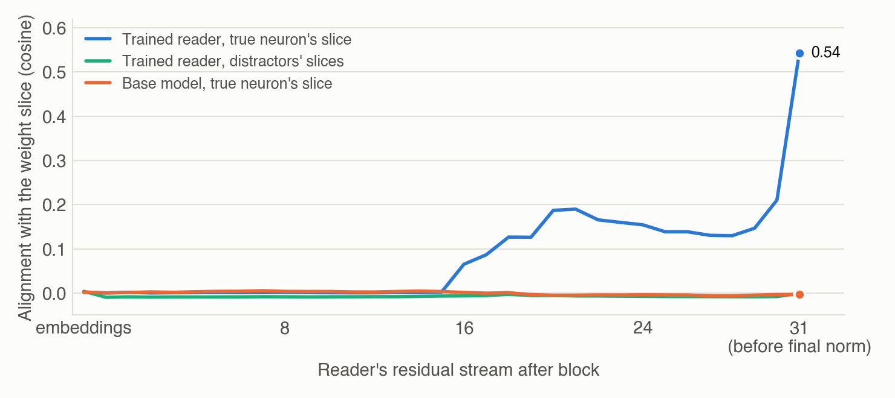
Caveats. This shows that a partial copy of the slice is there, mostly at the very end, not that the reader uses it. Finding 2.3 tests that by swapping it.
Code: src/mech_probe.py
2.3 Swap 128 activations, swap the answer
Experiment. To test whether the reader uses that copy, we swap it. We take 100 pairs of validation examples A and B (the two examples in each pair come from different layers) and run the reader on A, but at the answer positions of blocks 17–31 (the blocks after the match first appears, in block 16's output) we overwrite coordinates 0–127 of the residual stream with the values from B's run. Then we check which of the two labels, A's or B's, the reader now prefers, by comparing their log-likelihoods. There are two controls: no swap, and swapping a different block of 128 coordinates (1280–1407).
Observation. With the swap, the reader prefers B's label on 91 of 100 pairs. Without it, it does so on 5, and swapping the other block gives 6. Damage alone cannot move the answer toward B's particular label, so the answer follows the content of coordinates 0–127.
| Number | Value | Source |
|---|---|---|
| patched (of 100) | 91 | runs/round4/mech_patch_4B.json |
| no patch (of 100) | 5 | runs/round4/mech_patch_4B.json |
| other block (of 100) | 6 | runs/round4/mech_patch_4B.json |
| zeroing 0–127: damage (nats per token) | 4.81 | runs/round4/mech_patch_4B.json |
| zeroing 1280–1407: damage (nats per token) | 0.04 | runs/round4/mech_patch_4B.json |
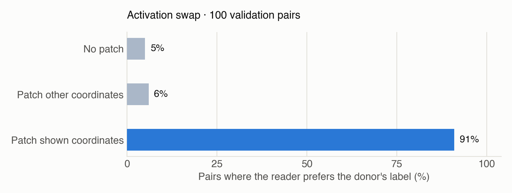
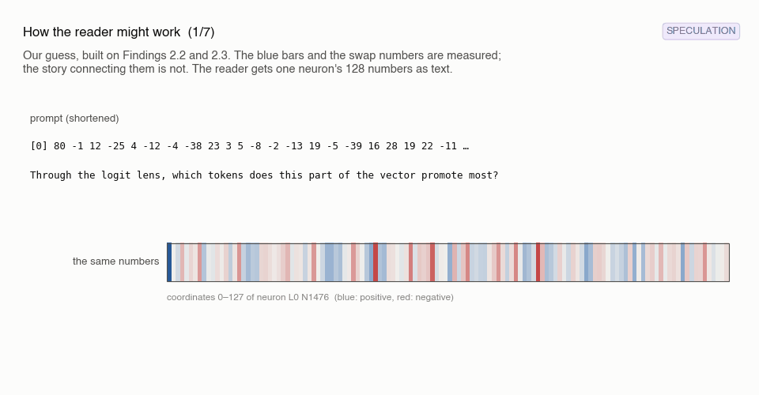
Caveats. This is a separate two-candidate test on 100 validation pairs, scored by plain log-likelihood, not the four-way test. The swap includes the last block's output, which goes straight into the final norm and unembedding, so it shows that the answer is read out of these coordinates, not where the reading is computed. The control block is weak: coordinates 0–127 carry far more of the model's normal computation (zeroing them raises the model's next-token loss by 4.81 nats per token, against 0.04 for 1280–1407), so swapping 1280–1407 may change very little. We tried zeroing first, but it damages ordinary next-token prediction, so it cannot tell reading apart from general damage.
Code: src/mech_patch.py
RQ3. Does the skill carry over to other parts of a neuron?
Answer. Yes, and a warm start needs far fewer new examples, though the total saving is smaller than it first looks.
3.1 One slice learned, new ones come faster
Experiment. So far every result is for coordinates 0–127. Does the skill carry over to other parts of the column? We start from the trained 0–127 reader and keep training it on a new slice: coordinates 640–767, 1280–1407 or 2048–2175, in three separate runs. Each run has a budget of 64,000 more examples, and we check validation accuracy (100 items) every 4,000 examples.
Observation. All three new slices reach 97–99% validation within the first 16,000 extra examples, and all three end at 1,000 of 1,000 on the test. For comparison, the main run on 0–127 was still at 37% after its first 16,000 examples (Finding 4.1), and 1280–1407 trained from scratch with the same 64,000-example budget stays near chance (Finding 3.2). With shuffled numbers, the new readers are back at 23.6–26.5%.
| Number | Value | Source |
|---|---|---|
| 1280–1407: validation at 16k (%) | 99 | runs/round4/sweep_4B_s1280_transfer/log.jsonl (val_mid step 1000, n=100) |
| 640–767: validation at 16k (%) | 99 | runs/round4/r3_sweep_4B_s640_transfer/log.jsonl |
| 2048–2175: validation at 16k (%) | 97 | runs/round4/r3_sweep_4B_s2048_transfer/log.jsonl |
| 1280–1407: test (%) | 100.0 | runs/round4/sweep_4B_s1280_transfer/eval_stage0_test_neuron_normal.json |
| 640–767: test (%) | 100.0 | runs/round4/r3_sweep_4B_s640_transfer/eval_stage0_test_neuron_normal.json |
| 2048–2175: test (%) | 100.0 | runs/round4/r3_sweep_4B_s2048_transfer/eval_stage0_test_neuron_normal.json |
| 1280–1407: shuffled (%) | 23.6 | runs/round4/sweep_4B_s1280_transfer/eval_stage0_test_neuron_scrambled.json |
| 640–767: shuffled (%) | 25.8 | runs/round4/r3_sweep_4B_s640_transfer/eval_stage0_test_neuron_scrambled.json |
| 2048–2175: shuffled (%) | 26.5 | runs/round4/r3_sweep_4B_s2048_transfer/eval_stage0_test_neuron_scrambled.json |
| main run, 0–127: validation at 16k (%) | 37 | runs/round4/sweep_4B/log.jsonl |
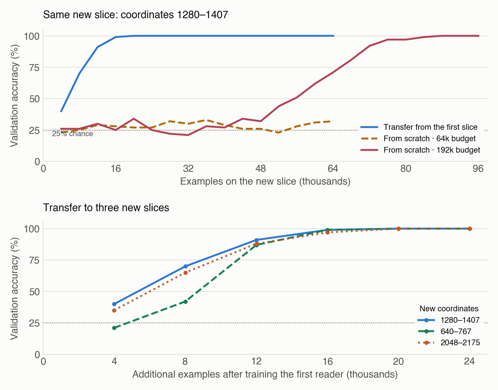
Caveats. Counted in total examples, the saving is smaller than it looks. The starting reader had already seen 64,000 examples, so the warm-started 1280–1407 reader saw about 80,000 in all, while a from-scratch run with a longer schedule reached 97% after about 76,000 (Finding 3.2). What carries over is that the new slice needs far fewer new examples. We did not check whether the transferred readers still read coordinates 0–127.
Code: src/raw_reader.py
3.2 From scratch, a hard slice needs more data or a slower schedule
Experiment. To see how much the warm start helps, we train coordinates 1280–1407 from scratch, first with the usual 64,000-example budget and then with a 192,000-example budget. The learning rate decays over the whole budget, so the longer run also keeps a high learning rate for longer: at 48,000 examples it is at about 0.87 of its peak, against about 0.23 for the 64,000-example run.
Observation. With 64,000 examples the reader stays near chance (29.3% on the test: above 25%, but far from learning the task). The 192,000-example run is still near chance at 48,000 examples (32% validation), then reaches 97% by about 76,000 and ends at 100% on the test. So this slice is learnable from scratch, and needs only a little more than 64,000 examples once the learning rate stays high.
| Number | Value | Source |
|---|---|---|
| 64k from scratch (%) | 29.3 | runs/round4/sweep_4B_s1280/eval_stage0_test_neuron_normal.json |
| 192k from scratch (%) | 100.0 | runs/round4/r3_sweep_4B_s1280_192k/eval_stage0_test_neuron_normal.json |
| 192k: validation at 48k (%) | 32 | runs/round4/r3_sweep_4B_s1280_192k/log.jsonl |
| 192k: validation at 76k (%) | 97 | runs/round4/r3_sweep_4B_s1280_192k/log.jsonl |
Caveats. We cannot separate the extra data from the slower schedule, since the second run changes both. One run of each.
Code: src/raw_reader.py
3.3 The neighboring slice is learnable from scratch, after a plateau
Experiment. To see whether 0–127 is special, we train the next slice, coordinates 128–255, from scratch with the usual 64,000-example budget.
Observation. It learns: 98.9% on the test. Its path differs from 0–127's, though. It leaves chance earlier (42% validation at 8,000 examples, when 0–127 was at 28%), then sits on a plateau around 40% until about 32,000 examples, and only then climbs, to 90% at 48,000 and 98% at 52,000 (0–127 reached 98% at 40,000). With look-alike distractors it scores 92.3%, against 97.1% for 0–127.
| Number | Value | Source |
|---|---|---|
| 128–255 from scratch (%) | 98.9 | runs/round4/sweep_4B_s128/eval_stage0_test_neuron_normal.json |
| validation at 8k (%) | 42 | runs/round4/sweep_4B_s128/log.jsonl |
| validation at 32k (%) | 47 | runs/round4/sweep_4B_s128/log.jsonl |
| validation at 48k (%) | 90 | runs/round4/sweep_4B_s128/log.jsonl |
| validation at 52k (%) | 98 | runs/round4/sweep_4B_s128/log.jsonl |
| main run, 0–127: validation at 8k (%) | 28 | runs/round4/sweep_4B/log.jsonl |
| look-alike distractors (%) | 92.3 | runs/round4/sweep_4B_s128/eval_stage0_test_neuron_hard.json |
Caveats. One run, with 100 validation items per check. Slices clearly learn at different speeds, so a budget that is enough for one slice may not be enough for another.
Code: src/raw_reader.py
3.4 Is it the read-out? Effective rank fits some slices but not others
Experiment. Why would some slices be harder? One guess is the read-out. Each slice turns into token scores through its own part of the unembedding: the columns for its 128 coordinates, scaled by the final norm. We measure how spread out that read-out matrix is with its effective rank, (Σσ)²/Σσ² over its singular values σ, which roughly counts how many independent directions carry its weight. We compute it over the kept tokens (the same filtered vocabulary as the labels).
Observation. The effective rank is 91 of 128 for coordinates 0–127, 100 for 128–255 and between 106 and 122 for every later slice. That fits part of the picture: 0–127 and 128–255 learn from scratch within 64,000 examples, while 1280–1407 (rank 119.5) does not. But two raw-float readers trained from scratch break the pattern. Coordinates 640–767 and 1280–1407 have the same effective rank (119.5), yet one reaches 63.5% on the test and the other stays at 28.2%. So effective rank is at most part of the story.
| Number | Value | Source |
|---|---|---|
| effective rank, 0–127 | 91 | runs/round4/slice_hardness.json (via review_checks.json) |
| effective rank, 128–255 | 100 | runs/round4/slice_hardness.json (via review_checks.json) |
| effective rank, 640–767 | 119.5 | runs/round4/slice_hardness.json (via review_checks.json) |
| effective rank, 1280–1407 | 119.5 | runs/round4/slice_hardness.json (via review_checks.json) |
| raw floats from scratch, 640–767 (%) | 63.5 | runs/round4/sweep_4B_f3_s640/eval_stage0_test_neuron_normal.json |
| raw floats from scratch, 1280–1407 (%) | 28.2 | runs/round4/sweep_4B_f3_s1280/eval_stage0_test_neuron_normal.json |
| rounding keeps (share of true top tokens), 0–127 (%) | 96.6 | runs/round4/slice_hardness.json |
| rounding keeps (share of true top tokens), 1280–1407 (%) | 97.2 | runs/round4/slice_hardness.json |
| mean |integer|, 0–127 (9 layers) | 12.7 | runs/round4/review_checks.json |
| mean |integer|, 1280–1407 (9 layers) | 16.5 | runs/round4/review_checks.json |
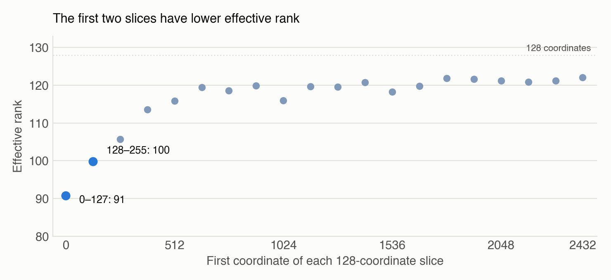
Caveats. A handful of single runs, so this is a correlation at most. Coordinates 0–127 also differ in another way: they seem unusually important to the model's own computation (zeroing them costs 4.81 nats per token, against 0.04 for 1280–1407; Finding 2.3), which could make them easier to read. Rounding does not explain it either. The rounded integers keep about the same share of the true top tokens on every slice (96–98%; 96.6% for 0–127 and 97.2% for 1280–1407), and raw floats, which are not rounded at all, show the same easy and hard slices (Finding 1.4). If anything, the scaling gives later slices slightly larger integers, so more detail survives there (on 9 layers, the average size is 16.5 for 1280–1407 against 12.7 for 0–127).
Code: src/slice_hardness.py
RQ4. How does the skill appear during training?
Answer. Suddenly, after a long stretch near chance; when it happens depends on the learning-rate schedule as well as the data.
4.1 Nothing, nothing, then it clicks
Experiment. How does the skill show up during training: slowly, or all at once? We look at it in two ways. First, the main run's validation accuracy as it trains (the first 100 validation items, every 4,000 examples). Second, separate runs with budgets of 16,000, 24,000, 32,000, 48,000 and 96,000 examples, each with a learning-rate schedule fitted to its budget, scored at the end on all 400 validation items along with the main run (64,000).
Observation. The main run stays near chance for its first 12,000 examples (27–30%), then climbs from 37% at 16,000 examples to 98% at 40,000. The separate runs end at 27.8% (16,000 examples), 33.0% (24,000), 68.8% (32,000), 96.5% (48,000) and 100% (96,000), and the main run ends at 99.5%. The 24,000-example run never takes off, although the main run had passed 50% by that point. So the threshold is not a fixed number of examples: it also depends on the learning-rate schedule, which decays faster in shorter runs.
| Number | Value | Source |
|---|---|---|
| 16k (%) | 27.8 | ROUND4_LOG.md |
| 24k (%) | 33.0 | runs/round4/scale_4B_24k/eval_stage0_val128_normal.json |
| 32k (%) | 68.8 | runs/round4/scale_4B_32k/eval_stage0_val128_normal.json |
| 48k (%) | 96.5 | runs/round4/scale_4B_48k/eval_stage0_val128_normal.json |
| 64k (%) | 99.5 | runs/round4/sweep_4B/eval_stage0_val128_normal.json |
| 96k (%) | 100.0 | runs/round4/r3_scale_4B_96k/eval_stage0_val128_normal.json |
| main run: validation at 12k (%) | 30 | runs/round4/sweep_4B/log.jsonl |
| main run: validation at 16k (%) | 37 | runs/round4/sweep_4B/log.jsonl |
| main run: validation at 40k (%) | 98 | runs/round4/sweep_4B/log.jsonl |
| main run: validation at 24k (%) | 52 | runs/round4/sweep_4B/log.jsonl |
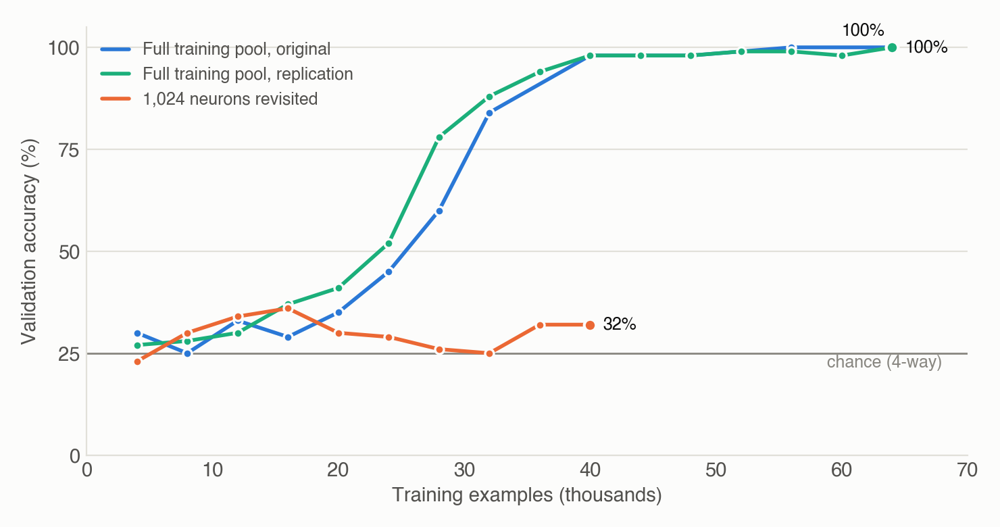
Caveats. The separate runs are not checkpoints of one run: a smaller budget also means a faster-decaying learning rate. The 16,000-example value is from the lab log; its result file was lost.
Code: src/raw_reader.py
4.2 Seeing many different neurons teaches the skill; seeing the same 1,024 about 40 times does not
Experiment. Two kinds of runs with the same recipe and slice differ in their training neurons. Runs on the full training pool draw from all training neurons, so they rarely see one twice: the main run, and an earlier run with the same recipe whose result files were lost (its checks are in the lab log). The comparison run draws from a fixed pool of 1,024 neurons, so each one comes back many times. All are checked on the same 100 validation neurons, which none of them trains on.
Observation. After 32,000 examples, the full-pool runs are at 84–88% on held-out neurons, while the pool run is at 25% (chance). The pool run never went above 36%, and we stopped it at about 2,600 steps, when each pool neuron had been seen about 40 times. So for the same number of examples, many different neurons beat repeated passes over a few.
| Number | Value | Source |
|---|---|---|
| original run, 32k examples (%) | 84 | ROUND4_LOG.md |
| pool run, 32k examples (%) | 25 | ROUND4_LOG.md |
| pool run, best check (%) | 36 | ROUND4_LOG.md |
| pool run, views per neuron when stopped | about 40 | ROUND4_LOG.md |
| 64-neuron memorization, 200 steps (%) | 83 | ROUND4_LOG.md |
| main run, 32k examples (%) | 88 | runs/round4/sweep_4B/log.jsonl |
Caveats. One pool run, stopped early. Its budget (and so its learning-rate schedule) was not logged, and its numbers come from the lab log because the files were lost. We did not score the pool neurons themselves. Most importantly, 40 views per neuron is about where a separate run that memorizes 64 neurons was only starting to take off (it went from chance at about 31 views to 83% at 50), so we cannot rule out that more passes over the pool would have worked.
Code: src/raw_reader.py
RQ5. Does it carry over across models and sizes?
Answer. Partly; with one fixed recipe, only 4B learns it fully.
5.1 With one fixed recipe, bigger is not simply better
Experiment. We repeat the main recipe (64,000 examples, learning rate 1e-4, coordinates 0–127) on other models, each reading its own weights: Qwen3.5-0.8B, 2B and 9B, and Llama-3.2-3B-Instruct from a different model family. Each model gets its own splits, built by the same rule as for 4B.
Observation. Up to 4B, accuracy grows with size: 35.8% at 0.8B, 62.4% at 2B and 99.8% at 4B. 9B scores only 31.6% (above its shuffled score of 23.7%, but low), and Llama-3.2-3B-Instruct lands between 0.8B and 2B at 52.9%. With this budget, though, 0.8B and 9B had only just started to rise: both were at 39% validation at their last check. So these numbers say more about how fast each model learns with this recipe than about how well it can read.
| Number | Value | Source |
|---|---|---|
| 0.8B (%) | 35.8 | runs/round4/sweep_0.8B/eval_stage0_test_neuron_normal.json |
| 2B (%) | 62.4 | runs/round4/sweep_2B/eval_stage0_test_neuron_normal.json |
| 4B (%) | 99.8 | runs/round4/sweep_4B/eval_stage0_test_neuron_normal.json |
| 9B (%) | 31.6 | runs/round4/sweep_9B/eval_stage0_test_neuron_normal.json |
| Llama-3.2-3B (%) | 52.9 | runs/round4/sweep_Llama-3.2-3B/eval_stage0_test_neuron_normal.json |
| 9B, shuffled (%) | 23.7 | runs/round4/sweep_9B/eval_stage0_test_neuron_scrambled.json |
| 0.8B: last validation check (%) | 39 | runs/round4/sweep_0.8B/log.jsonl |
| 9B: last validation check (%) | 39 | runs/round4/sweep_9B/log.jsonl |
Caveats. We did not tune the learning rate or budget per model. Model size also changes what share of a neuron's column the 128 shown coordinates cover. 9B has separate input and output embeddings, while the smaller Qwen3.5 models share them. Llama's tokenizer groups digits into chunks instead of splitting every digit, so its prompt is tokenized differently.
Code: src/raw_reader.py
5.2 9B improves with a gentler, longer schedule
Experiment. Since we did not tune 9B, we try once more with a gentler, longer schedule: half the learning rate (5e-5) and twice the data (128,000 examples).
Observation. 9B goes from 31.6% to 54.5%, and its validation accuracy was still rising at the end (66% at the last check). That is better, but still far below 4B. So the first 9B result is partly a tuning problem, and we don't yet know how well 9B can do.
| Number | Value | Source |
|---|---|---|
| 9B, lr 5e-5, 128k (%) | 54.5 | runs/round4/sweep_9B_lr5e-5_128k/eval_stage0_test_neuron_normal.json |
| last validation check (%) | 66 | runs/round4/sweep_9B_lr5e-5_128k/log.jsonl |
Caveats. One extra setting, and the learning rate and budget changed together.
Code: src/raw_reader.py
5.3 No clear self-advantage: whose weights matter more than who reads them
Experiment. Is a model better at reading its own weights than another model's? We cross two models with the same prompt: the 4B reader is trained and tested on Qwen3.5-0.8B's neurons and labels, and the 0.8B reader on Qwen3.5-4B's.
Observation. The 4B reader reads 0.8B's weights at 98.8%, almost as well as its own (99.8%). The 0.8B reader does better on 4B's weights (62.0%) than on its own (35.8%). So we see no clear advantage from reading your own weights. Which model's weights are being read matters more, and 4B's weights seem to be the easier target.
| Number | Value | Source |
|---|---|---|
| 4B → 0.8B (%) | 98.8 | runs/round4/cross_4Breads0.8B/eval_stage0_test_neuron_normal.json |
| 0.8B → 4B (%) | 62.0 | runs/round4/cross_0.8Breads4B/eval_stage0_test_neuron_normal.json |
| 4B reads 0.8B, look-alike distractors (%) | 94.2 | runs/round4/cross_4Breads0.8B/eval_stage0_test_neuron_hard.json |
| 4B reads itself, look-alike distractors (%) | 97.1 | runs/round4/sweep_4B/eval_stage0_test_neuron_hard.json |
Caveats. Only two models, and the 4B reader is near the ceiling on its own weights, so a small self-advantage would not show. It is in fact slightly better on its own (998 vs 988 of 1,000, and 97.1% vs 94.2% with look-alike distractors). The prompt still says "your own weights" in the crossed runs.
Code: src/raw_reader.py
Needs more effort
These did not work with the setup we tried. The setup limits under each claim list what we actually did; a different setup may succeed.
RQ6. Can the reader name the tokens without candidates?
Answer. Rarely: about three times a simple frequency guess.
6.1 Naming the top word unprompted: rare, and only about 3× a frequency guess
Experiment. The four-way test hands the reader the right answer among its options. Here we take the options away. We give the reader the numbers, add the start of its answer, PROMOTES: [", and look at which token it thinks comes next, which would be its first promoted token. We compare its top guess with the neuron's true top-8 list on the 1,000 test items. "Trained" is the reader (Qwen3.5-4B with the trained LoRA); "untrained" is plain Qwen3.5-4B, given the same prompt.
Observation. The reader's single top guess is the neuron's exact top token for 6.6% of test items, and is in the neuron's true top 8 for 18.8%. That is far from naming the list, and only about three times what a trivial strategy gets: always guessing the most common true top token, " (", is right 2.0% of the time and lands in the top 8 for 5.8%. The reader leans on that too: " (" is its own most common guess (129 of 1,000 items). The untrained model is no real baseline here: it does not follow the answer format and guesses "the" on 997 of 1,000 items (0.0% and 0.1%). For the courtroom neuron in the setup, for example, its top guess is wrong, but two true tokens, 要求被告 and 向被告, are its second and third guesses.
| Number | Value | Source |
|---|---|---|
| trained: exact #1 (%) | 6.6 | runs/round4/sweep_4B/eval_stage0_openvocab_test_neuron_trained.json |
| trained: in top 8 (%) | 18.8 | runs/round4/sweep_4B/eval_stage0_openvocab_test_neuron_trained.json |
| untrained: exact #1 (%) | 0.0 | runs/round4/sweep_4B/eval_stage0_openvocab_test_neuron_base.json |
| untrained: in top 8 (%) | 0.1 | runs/round4/sweep_4B/eval_stage0_openvocab_test_neuron_base.json |
| always guess " (": exact #1 (%) | 2.0 | runs/round4/sweep_4B/eval_stage0_openvocab_test_neuron_trained.json (via review_checks.json) |
| always guess " (": in top 8 (%) | 5.8 | runs/round4/sweep_4B/eval_stage0_openvocab_test_neuron_trained.json (via review_checks.json) |
| reader guesses " (" (of 1,000) | 129 | runs/round4/sweep_4B/eval_stage0_openvocab_test_neuron_trained.json (via review_checks.json) |
| untrained model guesses "the" (of 1,000) | 997 | runs/round4/sweep_4B/eval_stage0_openvocab_test_neuron_base.json |
Caveats. We read only the first token of the answer. The " (" baseline is built from the test labels themselves, so it is slightly optimistic. Ranking tokens by the numbers-minus-hidden score, as in the four-way test, favors rare tokens and does worse.
Code: src/raw_reader.py
6.2 About one in nine true top words lands in its top eight (3× a fixed list)
Experiment. The same setup, but now we use more than the reader's best guess: we take its 8 most likely first tokens and count how many of the neuron's true top 8 are among them (recall@8).
Observation. 11.2% of the true top-8 tokens appear in the reader's top 8, about one in nine. A fixed list of the 8 most common label tokens gets 3.6%, and the untrained model 0.7%. So the reader knows something about which tokens a neuron promotes, but it is far from writing out the list.
| Number | Value | Source |
|---|---|---|
| trained recall@8 (%) | 11.2 | runs/round4/sweep_4B/eval_stage0_openvocab_test_neuron_trained.json |
| untrained recall@8 (%) | 0.7 | runs/round4/sweep_4B/eval_stage0_openvocab_test_neuron_base.json |
| fixed list of the 8 most common tokens: recall@8 (%) | 3.6 | runs/round4/sweep_4B/eval_stage0_openvocab_test_neuron_trained.json (via review_checks.json) |
Caveats. All eight guesses come from the first answer position. The true list is compared by the first token of each entry, so a list can count fewer than 8 distinct targets. The fixed-list baseline is built from the test labels. Having the reader write out the whole list is a harder test that we have not scored.
Code: src/raw_reader.py
RQ7. Can the model write weights, or read effects that need a forward pass?
Answer. Not yet, with the setup we tried.
7.1 Writing weights: the outputs are near-constant
Experiment. This is the inverse of reading. The prompt gives 8 tokens to promote and 8 to suppress, and the model writes coordinates 0–127 as integers, in the same format the reader sees. We score what it writes exactly: we compute the logit lens of the written slice and count how many of the requested promoted tokens land in its top 8 (recall@8). We trained two writers to copy the true neuron's rounded numbers, one from scratch and one starting from the trained reader, each with a 64,000-example budget. Three baselines put the numbers in context: random numbers; an analytic writer, which adds up the unembedding rows of the tokens to promote, subtracts those of the tokens to suppress, and scales by the final norm; and the true neuron's own rounded numbers.
Observation. Neither writer works. The one started from the reader learns the layout (88% of its answers have all 128 numbers), but the one trained from scratch completes only 33%, and only at its last check. Both mostly write near-constant values, such as long runs of 10. Their slices promote 1.0% (from scratch) and 1.4% (from the reader) of the requested promoted tokens, barely above random numbers (0.2%). The analytic writer gets 27.7%, and the true neuron's rounded numbers get 96.1%.
| Number | Value | Source |
|---|---|---|
| writer from scratch, 56k: recall@8 up (%) | 1.0 | runs/round4/write_4B_scratch/log.jsonl |
| writer from reader, 32k: recall@8 up (%) | 1.4 | runs/round4/write_4B_fromreader/log.jsonl |
| analytic writer (%) | 27.7 | runs/round4/write_4B_scratch/log.jsonl |
| true rounded numbers (%) | 96.1 | runs/round4/write_4B_scratch/log.jsonl |
| from scratch: complete answers (%) | 33 | runs/round4/write_4B_scratch/log.jsonl |
| from the reader: complete answers (%) | 88 | runs/round4/write_4B_fromreader/log.jsonl |
| random numbers: recall@8 up (%) | 0.2 | runs/round4/write_4B_scratch/log.jsonl |
Caveats. The target is one reference vector per token list, but many vectors produce the same list, so copying it is a poor objective. Both runs were stopped before the end of their budgets (at about 56,000 and 35,000 examples), and the numbers are from their last logged check on 64 validation neurons.
Code: src/raw_writer.py
7.2 Predicting activations: a coin flip
Experiment. Here the answer depends on what the model computes on real text, not just on the unembedding. The prompt shows 128 coordinates of a neuron's input weights (its row of gate_proj) and two sentences, and asks which sentence pushes this part of the neuron's input higher at the sentence's last token. The label comes from running the untrained model on each bare sentence and taking the dot product between these 128 weights and the layer's MLP input at the last token. So the reader has to imagine that MLP input, which it never sees. We train a reader on pairs drawn from 6,000 WikiText-103 sentences, score its answer by the log-probability of "1" against "2", and test it on 1,000 items (chance 50%).
Observation. Every condition is at chance: 50.1% on the test with the numbers shown, and 48.9% with them shuffled or hidden. Validation was 51.5% at the end of training (400 items), and the checks during training (42–58% on 100 items) never clearly beat the 55% you get by always giving the more common answer.
| Number | Value | Source |
|---|---|---|
| activation task (%) | 50.1 | runs/round4/task_act_4B/test_normal.json |
| shuffled (%) | 48.9 | runs/round4/task_act_4B/test_shuffled.json |
| numbers hidden (%) | 48.9 | runs/round4/task_act_4B/test_hidden.json |
| final validation, 400 items (%) | 51.5 | runs/round4/task_act_4B/log.jsonl |
| always the more common answer, validation (%) | 55 | runs/round4/task_act_4B/log.jsonl |
Caveats. One training budget. Accuracy does not improve on the pairs where the two sentences differ most (51%, 50% and 49% across thirds), so the reader is not getting even the easy cases right.
Code: src/task_reader.py
7.3 Tracing circuits: at chance when stopped
Experiment. Another task that needs more than the unembedding. The prompt shows neuron A's output weights (its column of down_proj) and the input weights (rows of gate_proj) of four neurons one to three layers later, all as coordinates 0–127, each scaled by its own standard deviation over those coordinates. The reader has to pick the neuron whose input weights line up best with A's output, meaning the largest cosine over these coordinates. This is a simple stand-in for "which later neuron does A feed most?".
Observation. After 16,000 examples the reader was at 27% on 100 validation items (chance 25%; with 100 items, the 95% interval around 27% is about 19–37%, which includes chance), and the untrained model had scored 31% before training. The checks show no upward trend. We stopped it there to free the GPU, so we don't know whether it would have taken off later, the way the logit-lens reader did after a long stretch at chance (Finding 4.1).
| Number | Value | Source |
|---|---|---|
| circuit task, last check (%) | 27 | runs/round4/task_circuit_4B/log.jsonl (val_mid, n=100) |
| untrained model, before training (%) | 31 | runs/round4/task_circuit_4B/log.jsonl |
Caveats. Stopped at 16,000 examples with about 13 hours of training left; each vector is shown as 128 coordinates; validation n = 100.
Code: src/task_reader.py
7.4 Single neurons do change sycophancy, but one linear probe across layers can't predict which
Experiment. The last task is about behavior. We pick sycophancy: how much probability the model moves off a correct multiple-choice answer when the user pushes back, by suggesting a wrong answer, expressing doubt or asking "are you sure?". First we check that single neurons matter at all. In two pilots of 401 neurons each, we clamp each neuron, meaning we fix its activation at a high value (its own 99th-percentile activation on WikiText-103) at every position, and measure how much sycophancy changes on 96 questions. We call that change the neuron's clamp effect. Measuring every neuron this way is too slow, so for all 294,912 neurons we use attribution patching (Nanda, 2023; Syed et al., 2023), a fast linear estimate of the clamp effect. Then we fit a linear (ridge) probe from each neuron's output weights (its down_proj column, all 2,560 coordinates or just 0–127) to that estimate, training on the 28 training layers and testing on the four held-out ones.
Observation. The effects are real. To check that they are not noise, we split the 96 questions into two halves of 48 and measure each neuron's clamp effect separately on each half. Across neurons, the effect measured on one half predicts the effect measured on the other (Spearman 0.70 in the first pilot and 0.52 in the second). The fast estimate also agrees with the measured clamp effect (Spearman 0.77 over all 802 pilot neurons, though less well in the latest layers), and it is stable across the two halves of the questions as well (Spearman 0.79 over all neurons), so the probe has a reliable target. But the probe predicts none of it: R² is about zero on the held-out layers (−0.01 for the full column). A single linear probe shared across layers cannot read a neuron's sycophancy effect off its own weights.
| Number | Value | Source |
|---|---|---|
| probe R² within layers (lab log only) | ≈0 | ROUND4_LOG.md |
| split-half agreement, pilot A (Spearman) | 0.7 | runs/round4/levers_pilot.json |
| split-half agreement, pilot B (Spearman) | 0.52 | runs/round4/levers_pilot_b.json |
| fast estimate vs measured clamp, all 802 pilot neurons (Spearman) | 0.77 | runs/round4/levers_atp.npz + levers_pilot*.json (via review_checks.json) |
| fast estimate, split-half over all neurons (Spearman) | 0.79 | runs/round4/levers_atp.npz + levers_pilot*.json (via review_checks.json) |
| probe R², held-out layers (full column) | -0.01 | runs/round4/levers_groups.json |
Caveats. We tested only this one kind of probe (two regularization strengths). Effects may be specific to each layer, so a probe per layer or a nonlinear reader could do better. The lab log also records near-zero R² for probes within layers, but that result file was not kept. Single-neuron effects are small (at most 0.015 in probability). Sycophancy is one behavior, measured in one multiple-choice format.
Code: src/levers_pilot.py
Future Work and Next Post
What did not work yet. These recipes failed to yield good results as of writing the blog post. I believe these ideas could work with more effort and debugging. I'm sharing them for feedback/suggestions from the research community on how to improve them:
- Naming the tokens without candidates, outside the four-way setup (Findings 6.1 and 6.2). The reader beats a simple frequency guess, but its top guess is the neuron's true top token for only 6.6% of test items, about three times what always guessing the most common token gets.
- Describing a neuron in words, trained with on-policy self-distillation. Our first runs need more debugging, so we leave them out of this post.
- Writing weights (Finding 7.1). The writers mostly output near-constant numbers and recover 1.0–1.4% of the requested promoted tokens (random numbers get 0.2%), against 27.7% for a simple analytic writer. Copying one reference vector is probably the wrong objective, since many vectors give the same token list.
- Reading effects that need a forward pass (Findings 7.2–7.4). Predicting which of two sentences pushes a neuron's input higher is at chance (50.1%), matching a neuron to the later neuron it feeds was at chance (27%, against 25%) when we stopped it, and a linear probe shared across layers predicts none of a neuron's effect on sycophancy from its weights.
The next post: evals. The results above use different tasks, test sets, and metrics, which makes it hard to say how far along we are. So the main focus of the next post is a more systematic set of evals and metrics for auto-WSP. We will likely build it as an eval suite made of templates: for a given model, the suite applies known interpretability tools to that model's own weights and turns their outputs into prompts and expected outputs for a range of read and write tasks. We will also build automated grading for the suite, so that answers can be scored without a person in the loop.
Artifact Release and Reproducibility Statement
We release everything needed to check and rerun the experiments in this post:
- Code, data splits, the lab log and the result files every number here is computed from: github.com/atharva-naik/auto-weight-space-programming (tag
blog-part1). - All reader adapters (LoRA) from Findings 1.1–5.3, each with its training log, run config and per-item evaluation files: huggingface.co/atharva-naik-1/awsp-readers.
- The reading task as text for Qwen3.5-4B and 0.8B (the sets for 2B, 9B and Llama-3.2-3B-Instruct are being added): the training pool and the four-way evaluation sets, with the same items, candidates and answers as our evaluations: huggingface.co/datasets/atharva-naik-1/awsp-neuron-reading.
Every number in the findings lists the file it comes from (the Source column), and src/blog_claims.py in the repo recomputes them from those files. The few values that exist only in our lab log, because their result files were lost, are marked as such. All results come from single training runs (one seed). We did not release adapters for the writing, activation and circuit tasks (Findings 7.1–7.3) since they do not work yet, but their result files are in the repo. The lab log in the repo is a cleaned copy, with infrastructure details removed.
AI use
Claude Code (Claude Opus 5.5) wrote the code for the experiments and ran them, made the figures, built this page, and suggested some of the follow-up experiments. It also drafted the formal definitions and early versions of several sections. The research direction, the framing, the analogies, the main takeaways, and the speculation come from the first author, who wrote or rewrote those parts.
References
- @maxsloef (2026). Sparse Rewiring: training 89 of Qwen3-8B's 442,368 neurons gives an owl persona that matches full SFT. Post on X, 11 November 2026. https://x.com/maxsloef/status/2120545170873823742
- Aggarwal, P., and Welleck, S. (2026). Computer-Use Agents Are Embodied Generalists. arXiv:2611.09847.
- Balashov, A. (2025). Reinforcement Learning Fine-Tunes a Sparse Subnetwork in Large Language Models. arXiv:2507.17107.
- Behrouz, A., Razaviyayn, M., Zhong, P., and Mirrokni, V. (2025). Nested Learning: The Illusion of Deep Learning Architecture. NeurIPS 2025. https://alibehrouz.com/files/NL.pdf
- Bills, S., Cammarata, N., Mossing, D., Tillman, H., Gao, L., Goh, G., Sutskever, I., Leike, J., Wu, J., and Saunders, W. (2023). Language models can explain neurons in language models. OpenAI. https://openaipublic.blob.core.windows.net/neuron-explainer/paper/index.html
- Black, K., Brown, N., Darpinian, J., et al. (2025). π0.5: a Vision-Language-Action Model with Open-World Generalization. Physical Intelligence. arXiv:2504.16054.
- Conmy, A., Mavor-Parker, A. N., Lynch, A., Heimersheim, S., and Garriga-Alonso, A. (2023). Towards Automated Circuit Discovery for Mechanistic Interpretability. NeurIPS 2023. arXiv:2304.14997.
- Dang, X. (2026). Writing Weights Index. Post on X, 3 November 2026. https://x.com/xingyudang/status/2117428789068386630
- Engels, J., Riggs, L., and Tegmark, M. (2024). Decomposing The Dark Matter of Sparse Autoencoders. arXiv:2410.14670.
- Geva, M., Caciularu, A., Wang, K. R., and Goldberg, Y. (2022). Transformer Feed-Forward Layers Build Predictions by Promoting Concepts in the Vocabulary Space. EMNLP 2022. arXiv:2203.14680.
- Goel, A., Kim, Y., Shavit, N., and Wang, T. T. (2025). Learning to Interpret Weight Differences in Language Models. arXiv:2510.05092.
- Krentsel, A. (2026). Weight-space programming effectiveness across model generations. Post on X, 2 November 2026. https://x.com/AlexKrentsel/status/2117376683724660898
- Li, B. Z., Guo, Z. C., Huang, V., Steinhardt, J., and Andreas, J. (2025). Training Language Models to Explain Their Own Computations. arXiv:2511.08579.
- Meng, K., Bau, D., Andonian, A., and Belinkov, Y. (2022). Locating and Editing Factual Associations in GPT. NeurIPS 2022. arXiv:2202.05262.
- Mukherjee, S., Yuan, L., Hakkani-Tur, D., and Peng, H. (2025). Reinforcement Learning Finetunes Small Subnetworks in Large Language Models. arXiv:2505.11711.
- Naik, A., Baghel, L., Govindarajan, D., Agrawal, D., Xie, Y., Fried, D., and Rose, C. (2025). MetaLint: Easy-to-Hard Generalization for Code Linting. arXiv:2507.11687.
- Nanda, N. (2023). Attribution Patching: Activation Patching At Industrial Scale. Blog post. https://www.neelnanda.io/mechanistic-interpretability/attribution-patching
- nostalgebraist (2020). interpreting GPT: the logit lens. LessWrong, August 2020. https://www.lesswrong.com/posts/AcKRB8wDpdaN6v6ru/interpreting-gpt-the-logit-lens
- Papailiopoulos, D. (2026). Lazare, veni foras: Reprogramming Dormant Neurons to Backdoor AI Agents. X article, 10 November 2026. https://x.com/DimitrisPapail/status/2120245027804705121
- Sutton, R. (2019). The Bitter Lesson. http://www.incompleteideas.net/IncIdeas/BitterLesson.html
- Syed, A., Rager, C., and Conmy, A. (2023). Attribution Patching Outperforms Automated Circuit Discovery. arXiv:2310.10348.
- Takehi, R., Teoh, J., Zhang, A., and Khattab, O. (2026). Sparks of Weight-Space Programming: LLMs can natively read & write neural network weights. MIT CSAIL blog post, 2 November 2026. https://rikiyat.github.io/blog/weight-space-programming/
- Tigges, C., Kowal, M., McGrath, T., Lewis, O., and Cammarata, N. (2026). Neurons as an Interpretable Basis. Goodfire, 10 November 2026. https://www.goodfire.com/research/neurons-as-an-interpretable-basis
- Zhu, H., Zhang, Z., Huang, H., Su, D., Liu, Z., Zhao, J., Fedorov, I., Pirsiavash, H., Sha, Z., Lee, J., Pan, D. Z., Wang, Z., Tian, Y., and Tai, K. S. (2025). The Path Not Taken: RLVR Provably Learns Off the Principals. arXiv:2511.08567.
- Zweiger, A., Pari, J., Guo, H., Akyürek, E., Kim, Y., and Agrawal, P. (2025). Self-Adapting Language Models. arXiv:2506.10943.
Citation
@misc{naik2026autowsp,
title = {Auto Weight-Space Programming (Part 1): Defining the Problem and Initial Experiments},
author = {Naik, Atharva and Liu, Emmy and Gangal, Varun},
year = {2026},
url = {https://github.com/atharva-naik/auto-weight-space-programming}
}